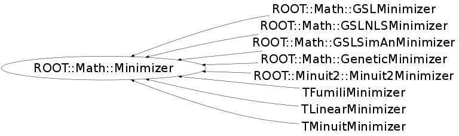

class ROOT::Math::Minimizer
Abstract Minimizer class, defining the interface for the various minimizer (like Minuit2, Minuit, GSL, etc..) Plug-in's exist in ROOT to be able to instantiate the derived classes like ROOT::Math::GSLMinimizer or ROOT::Math::Minuit2Minimizer via the plug-in manager. Provides interface for setting the function to be minimized. The function must implemente the multi-dimensional generic interface ROOT::Math::IBaseFunctionMultiDim. If the function provides gradient calculation (implements the ROOT::Math::IGradientFunctionMultiDim interface) this will be used by the Minimizer. It Defines also interface for setting the initial values for the function variables (which are the parameters in of the model function in case of solving for fitting) and especifying their limits. It defines the interface to set and retrieve basic minimization parameters (for specific Minimizer parameters one must use the derived classes). Then it defines the interface to retrieve the result of minimization ( minimum X values, function value, gradient, error on the mimnimum, etc...) @ingroup MultiMin
Function Members (Methods)
This is an abstract class, constructors will not be documented.
Look at the header to check for available constructors.
public:
| virtual | ~Minimizer() |
| virtual void | Clear() |
| virtual bool | Contour(unsigned int, unsigned int, unsigned int&, double*, double*) |
| virtual double | Correlation(unsigned int i, unsigned int j) const |
| virtual double | CovMatrix(unsigned int i, unsigned int j) const |
| virtual int | CovMatrixStatus() const |
| virtual double | Edm() const |
| double | ErrorDef() const |
| virtual const double* | Errors() const |
| virtual bool | GetCovMatrix(double*) const |
| virtual bool | GetHessianMatrix(double*) const |
| virtual bool | GetMinosError(unsigned int, double& errLow, double& errUp, int = 0) |
| virtual double | GlobalCC(unsigned int) const |
| virtual bool | Hesse() |
| bool | IsValidError() const |
| unsigned int | MaxFunctionCalls() const |
| unsigned int | MaxIterations() const |
| virtual const double* | MinGradient() const |
| virtual bool | Minimize() |
| virtual double | MinValue() const |
| virtual unsigned int | NCalls() const |
| virtual unsigned int | NDim() const |
| virtual unsigned int | NFree() const |
| virtual ROOT::Math::MinimizerOptions | Options() const |
| double | Precision() const |
| int | PrintLevel() const |
| virtual void | PrintResults() |
| virtual bool | ProvidesError() const |
| virtual bool | Scan(unsigned int, unsigned int&, double*, double*, double = 0, double = 0) |
| void | SetDefaultOptions() |
| void | SetErrorDef(double up) |
| virtual bool | SetFixedVariable(unsigned int, const string&, double) |
| virtual void | SetFunction(const ROOT::Math::IMultiGenFunction& func) |
| virtual void | SetFunction(const ROOT::Math::IMultiGradFunction& func) |
| virtual bool | SetLimitedVariable(unsigned int, const string&, double, double, double, double) |
| virtual bool | SetLowerLimitedVariable(unsigned int ivar, const string& name, double val, double step, double lower) |
| void | SetMaxFunctionCalls(unsigned int maxfcn) |
| void | SetMaxIterations(unsigned int maxiter) |
| void | SetOptions(const ROOT::Math::MinimizerOptions& opt) |
| void | SetPrecision(double prec) |
| void | SetPrintLevel(int level) |
| void | SetStrategy(int strategyLevel) |
| void | SetTolerance(double tol) |
| virtual bool | SetUpperLimitedVariable(unsigned int ivar, const string& name, double val, double step, double upper) |
| void | SetValidError(bool on) |
| virtual bool | SetVariable(unsigned int ivar, const string& name, double val, double step) |
| virtual bool | SetVariableValue(unsigned int, double) |
| virtual bool | SetVariableValues(const double* x) |
| int | Status() const |
| int | Strategy() const |
| double | Tolerance() const |
| virtual int | VariableIndex(const string&) const |
| virtual string | VariableName(unsigned int) const |
| virtual const double* | X() const |
Data Members
protected:
Class Charts
{kind=link}
{kind=link}
{kind=link}
{kind=link}

Function documentation
void SetFunction(const ROOT::Math::IMultiGradFunction& func)
set a function to minimize using gradient
bool SetLowerLimitedVariable(unsigned int ivar, const string& name, double val, double step, double lower)
set lower limit variable (override if minimizer supports them )
return SetLimitedVariable(unsigned int , const string& , double , double , double , double )
bool SetUpperLimitedVariable(unsigned int ivar, const string& name, double val, double step, double upper)
set upper limit variable (override if minimizer supports them )
bool SetFixedVariable(unsigned int , const string& , double )
set fixed variable (override if minimizer supports them )
bool SetVariableValue(unsigned int , double )
set the value of an existing variable
{ return false; }bool SetVariableValues(const double* x)
set the values of all existing variables (array must be dimensioned to the size of the existing parameters)
unsigned int NDim() const
this is <= Function().NDim() which is the total number of variables (free+ constrained ones)
unsigned int NFree() const
number of free variables (real dimension of the problem) this is <= Function().NDim() which is the total
double CovMatrix(unsigned int i, unsigned int j) const
return covariance matrices elements
if the variable is fixed the matrix is zero
The ordering of the variables is the same as in errors
bool GetCovMatrix(double* ) const
Fill the passed array with the covariance matrix elements
if the variable is fixed or const the value is zero.
The array will be filled as cov[i *ndim + j]
The ordering of the variables is the same as in errors and parameter value.
This is different from the direct interface of Minuit2 or TMinuit where the
values were obtained only to variable parameters
{ return false; }bool GetHessianMatrix(double* ) const
Fill the passed array with the Hessian matrix elements
The Hessian matrix is the matrix of the second derivatives
and is the inverse of the covariance matrix
If the variable is fixed or const the values for that variables are zero.
The array will be filled as h[i *ndim + j]
{ return false; }int CovMatrixStatus() const
return status of covariance matrix
using Minuit convention {0 not calculated 1 approximated 2 made pos def , 3 accurate}
Minimizer who implements covariance matrix calculation will re-implement the method
{ return 0; }double Correlation(unsigned int i, unsigned int j) const
return correlation coefficient between variable i and j.
If the variable is fixed or const the return value is zero
double GlobalCC(unsigned int ) const
return global correlation coefficient for variable i
This is a number between zero and one which gives
the correlation between the i-th parameter and that linear combination of all
other parameters which is most strongly correlated with i.
Minimizer must overload method if implemented
{ return -1; }bool GetMinosError(unsigned int , double& errLow, double& errUp, int = 0)
minos error for variable i, return false if Minos failed or not supported
and the lower and upper errors are returned in errLow and errUp
An extra flag specifies if only the lower (runopt=-1) or the upper (runopt=+1) error calculation is run
(This feature isnot yet implemented)
bool Hesse()
perform a full calculation of the Hessian matrix for error calculation
{ return false; }bool Scan(unsigned int , unsigned int& , double* , double* , double = 0, double = 0)
bool Contour(unsigned int , unsigned int , unsigned int& , double* , double* )
find the contour points (xi,xj) of the function for parameter i and j around the minimum
The contour will be find for value of the function = Min + ErrorUp();
void PrintResults()
return reference to the objective function virtual const ROOT::Math::IGenFunction & Function() const = 0; print the result according to set level (implemented for TMinuit for mantaining Minuit-style printing)
{}std::string VariableName(unsigned int ) const
get name of variables (override if minimizer support storing of variable names) return an empty string if variable is not found
{ return std::string();}int VariableIndex(const string& ) const
get index of variable given a variable given a name return -1 if variable is not found
{ return -1; }double Precision() const
precision of minimizer in the evaluation of the objective function ( a value <=0 corresponds to the let the minimizer choose its default one)
{ return fPrec; }double ErrorDef() const
return the statistical scale used for calculate the error is typically 1 for Chi2 and 0.5 for likelihood minimization
{ return fUp; }opt. SetPrintLevel(int level)
opt. SetStrategy(int strategyLevel)
opt. SetMaxFunctionCalls(unsigned int maxfcn)
opt. SetMaxIterations(unsigned int maxiter)
opt. SetTolerance(double tol)
opt. SetPrecision(double prec)
opt. SetErrorDef(double up)
void SetValidError(bool on)
flag to check if minimizer needs to perform accurate error analysis (e.g. run Hesse for Minuit)
{ fValidError = on; }